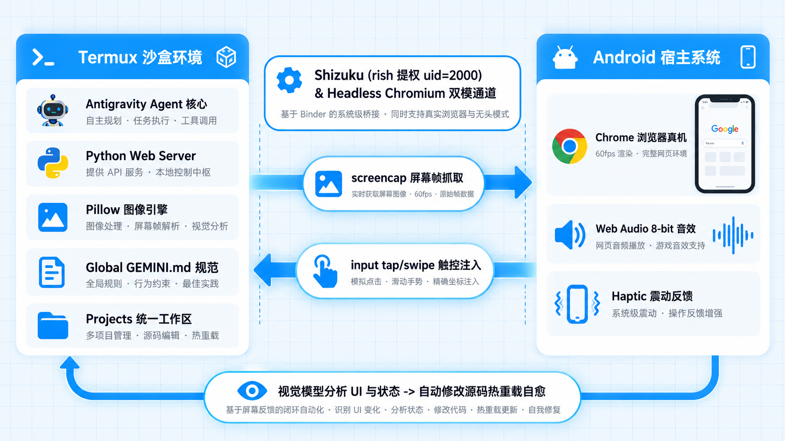
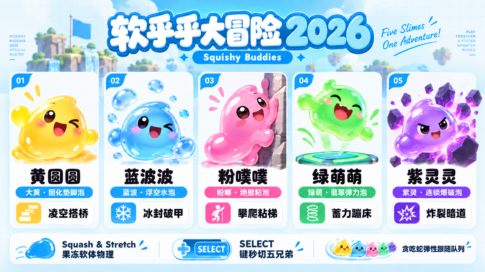
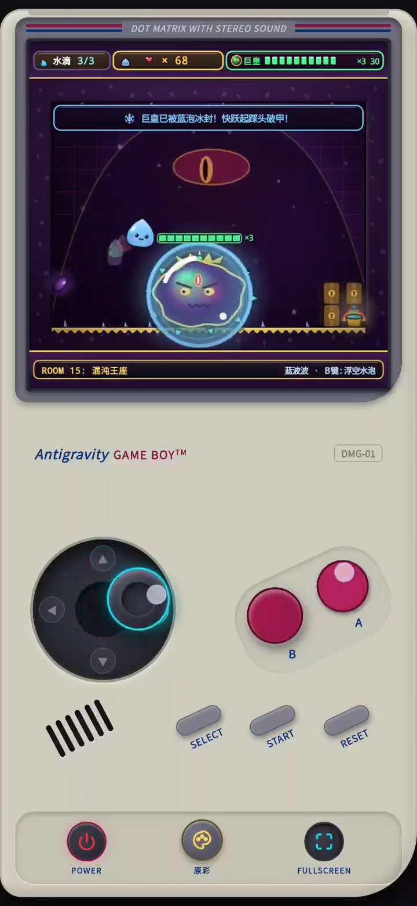

作者：一个习惯在手机上折腾的独立开发者
核心主旨：工作方式的范式变革 —— 从“工位电脑搬砖”到“口袋里的自主智能体”
核心环境：Android 14+ / AArch64 原生 Termux 沙盒 + Antigravity CLI
核心实战：从 0 到 1 纯原创自制复古掌机动作解谜游戏《软乎乎大冒险 2026》（Squishy Buddies）
配套资源：完整源码与自动化测试套件已开源，真机测试截图位于images/目录
GEMINI.md 全局记忆法rish) 系统级提权全指南rish 工具链与我踩平的 Android 14 内存权限深坑很多人常问我：“手机屏幕这么小、又没有实体键盘鼠标，在手机上写代码难道不是自讨苦吃吗？”
这个问题直击了传统软件工程的惯性思维 —— 大家默认“写代码”就必须把人死死锚定在工位、办公椅和厚重的 PC 电脑前。每天坐在屏幕前数小时，手动敲击每一行语法、肉眼排查每一个错位、不断在 IDE、终端与浏览器窗口之间反复横跳，本质上仍是一种“体力密集型”的重复劳动。
但工作方式的根本性变革，正在悄然发生：
[ 我在手机聊天窗口下达自然语言战略决策 ]
│
▼
┌───────────────────────────┐
│ Antigravity CLI │ (手机 Termux 内部的自主主力程序员)
└─────────────┬─────────────┘
│
┌─────────┴─────────┐
▼ ▼
[ 智能代码编写与本地编译 ] [ 提权调用 Shizuku / rish ]
│ │
▼ ▼
[ 本地轻量 Web 守护 ] [ 无头浏览器后台静默自动化验收 ]
│ │
└─────────┬─────────┘
│
▼
┌─────────────────────┐
│ Android 宿主浏览器 │ (阶段性成果直达、真机触感核验)
└─────────────────────┘
在这篇文章中，我将毫无保留地分享我的整套调优链路、踩坑实录，并以一个我完全用手机指挥 Antigravity CLI 从 0 到 1 搓出来的原创游戏《软乎乎大冒险 2026》为例，带你亲眼见证这种颠覆传统工位绑定的移动端全新工作方式。
在手机上安装最新版 Termux：
- GitHub 官方发布下载地址：https://github.com/termux/termux-app/releases
（选择下载 termux-app_v..._arm64-v8a.apk 或 universal 版本；切勿使用 Google Play 商店版本，其因 Android 政策限制已停止维护）。
进入终端后，首先升级软件源并安装核心开发套件：
# 1. 换国内优质源（可选）并升级基础依赖
pkg update -y && pkg upgrade -y
# 2. 安装 Node.js LTS、Python、Git、Curl 与编译依赖
pkg install -y nodejs-lts python git curl build-essential
# 3. 安装用于图像生成与视觉校准的 Pillow 库 (Termux 预编译包)
pkg install -y python-pillow
# 4. 申请存储权限（使 Termux 能访问手机内部存储 /sdcard）
termux-setup-storage
许多习惯了标准 Ubuntu/Debian 桌面或服务器的开发者，在手机上折腾 AI 智能体时最常犯的错误就是“代入 PC 习惯”。我在刚开始折腾时也踩过不少坑，在 Android 手机系统底层，这会直接导致脚本报错、权限越界甚至进程被系统直接杀死。这是我总结并固化的四条黄金铁律：
| 维度 | PC/Linux 服务器习惯 ❌ | Android Termux 真机规范 ✔ | 核心原因与替代方案 |
|---|---|---|---|
| 系统特权 | 盲目执行 sudo apt-get |
使用 pkg install 或通过 rish 提权 |
Termux 是单用户沙盒（无 root 权限），不存在标准 sudo |
| 后台服务 | 依赖 systemctl start xxx |
nohup、后台任务 (&) 或轻量脚本 |
Android 无 systemd 守护树，采用自身 init 机制 |
| 音频交互 | 调用 arecord / ALSA / PulseAudio |
优先使用浏览器 Web Audio API | 桌面级声卡驱动不可用，Web Audio 可直通 Android 底层 AudioTrack |
| 可视化交互 | 调用 xdg-open / Tkinter / Qt 弹窗 |
本地搭建 Web 服务并通过 termux-open-url 唤起真机浏览器 |
Android 无 X11/Wayland 桌面窗口管理器，浏览器是最强画布 |
Antigravity CLI 是我指挥整个系统的 Agent 大脑中枢。在 Termux 中执行官方一键安装脚本：
# 1. 一键安装 Antigravity CLI
curl -fsSL antigravity.google/cli/install.sh | bash
# 2. 关键避坑：将安装目录追加至 PATH（Termux 默认未包含 ~/.local/bin）
echo 'export PATH="$HOME/.local/bin:$PATH"' >> ~/.bashrc && source ~/.bashrc
# 3. 验证并启动智能体
agy
⚠️ 避坑提示（No command agy found）：
安装程序默认将可执行文件放于~/.local/bin/agy。若未执行第 2 步，直接输入agy会报找不到命令错误。写入~/.bashrc刷新后即可全局使用（若未立即生效，重启一次 Termux 即可）。
在手机端搞高频开发，如果智能体每修改一个文件、执行一条常规命令都要跳出弹窗让我点击确认，开发节奏会被严重割裂，人会极其疲惫。因此我的核心配置就是开启免审批自主权限：
配置文件路径：~/.gemini/antigravity-cli/settings.json
{
"toolPermission": "always-proceed"
}
💡 我的大模型选型建议（自动跟随，永不过时）：
- 默认最佳实践（自动平滑升级）：在配置文件中无需配置model字段。Antigravity 会自动由云端调度中心分配当前最新、最强大的官方推荐主力大模型。未来大模型代际升级时，无需修改任何配置文件，就能无缝享受新模型的智力跃升。 - 临时指定模型（按需使用）：如果遇到特定测试场景需要轻量低延迟，只需在启动终端时传参即可：bash # 启动时临时指定特定模型（例如测试轻量快速模式） agy --model gemini-3.8-flash- 安全边界：配置"toolPermission": "always-proceed"后，常规的代码编辑、测试执行、文件检索均由智能体全自主推进；若涉及高危系统指令，底层仍有沙盒把关。
GEMINI.md 全局记忆法为了让智能体每次被我唤起时，都能时刻清醒地知道自己身处“安卓手机 Termux 运行载体”，而不是幻想自己在一台 Linux 服务器上，我建立了一份全局记忆规范文件。
全局规则文件统一保存在：~/.gemini/config/GEMINI.md
# 全局用户偏好与开发记忆 (Global Preferences & Memory)
## 1. 核心运行载体：Android 手机系统的 Termux 终端
> **最高执行原则**：智能体时刻明确自身运行在安卓手机终端 (Termux on Android)，严禁代入标准 PC/Linux 桌面服务器习惯，严格遵守以下操作规范：
- 严禁使用 sudo 命令：Termux 默认无 sudo。系统级操作优先调用已配置好的 Shizuku 提权工具 `rish`（具备 shell 用户和 ext_data_rw 权限）。
- 严禁依赖 systemd / systemctl：后台服务一律使用 nohup 或轻量任务守护。
- 严禁使用 PC 桌面级音频/声卡工具：音频交互优先使用浏览器 Web Audio API 代码合成。
- 严禁调用 PC 桌面 GUI 窗口：可视化交互一律构建为 Web 本地服务，唤起宿主浏览器必须使用 `termux-open-url`。
- 包管理工具规范：安装依赖一律使用 `pkg install`。
## 2. 交互与设计原则（移动端第一）
- 移动端绝对优先：所有前端页面、Web 演示或小游戏，默认只考虑移动端触屏交互，无需适配 PC 键盘鼠标。
- 触屏友好交互：提供触摸滑动式虚拟摇杆、大号按键、连发支持、防误触与震动反馈（Haptic Feedback）。
- 语言偏好：中文交流，结构清晰。
## 3. 项目与文件管理规范
- 开发主目录：统一存放在 `~/projects/<项目名>`。
- 成果交付：生成的单文件、产物或报告，按需同步一份到 `/storage/emulated/0/Download/tank-game-tutorial/` 或 `~/storage/downloads/`。
有了这份全局记忆，智能体绝不会再去写 PC 端 Ctrl+C、WASD 键盘监听这种废代码，而是直奔移动端全屏布局与触控手势。
rish) 系统级提权全指南Android 系统对每个 App 实行严格的沙盒隔离（每个 App 分配独立的 Linux uid，例如 u0_a414）。默认情况下，处于沙盒中的 Termux：
- 无法调用 Android 原生的 screencap 截图命令（会报 Permission Denied）。
- 无法调用 input tap / input swipe 向系统注入触控事件。
- 无法读取或写入某些被系统保护的应用沙盒目录。
为了打破这层枷锁，我引入了 Shizuku。它巧妙利用了 Android 系统的无线调试 (Wireless ADB) 接口，在免 Root 的情况下为受信任应用提供标准的 adb shell 权限（uid=2000(shell)）。通过 Shizuku 官方提供的命令行客户端 rish (Rootless Interactive Shell)，我的 Termux 智能体即可直接以 shell 身份执行系统级命令！
rish 工具链与我踩平的 Android 14 内存权限深坑在 Shizuku 启动成功后，需要将 rish 二进制文件与 DEX 运行库挂载到 Termux 环境中：
# 1. 在 Shizuku App 中点击“使用终端应用”，导出 rish 文件到 Downloads
# 随后在 Termux 中将其拷贝到系统可执行目录
cp ~/storage/downloads/shizuku/rish $PREFIX/bin/rish
cp ~/storage/downloads/shizuku/rish_shizuku.dex $PREFIX/bin/rish_shizuku.dex
# 2. 赋予执行权限
chmod +x $PREFIX/bin/rish
打开 $PREFIX/bin/rish，必须找到 PKG 变量并显式指定为 Termux 的包名：
# 编辑 $PREFIX/bin/rish 的第 17 行左右
PKG="com.termux"
在 Android 14 及以上系统中，若 rish_shizuku.dex 具备可写权限，Android 底层的 app_process 会因安全策略触发 Failure to load dex: file is writable 致命崩溃。
必做修复：将 dex 文件的写权限全部剥离，设置为只读：
chmod 400 $PREFIX/bin/rish_shizuku.dex
完成上述配置后，我在 Termux 终端直接测试提权状态：
# 验证 shell 提权是否成功
rish -c id
成功输出示例：
uid=2000(shell) gid=2000(shell) groups=2000(shell),1004(input),1007(log),1015(sdcard_rw),1028(sdcard_r),3003(inet),3011(ext_data_rw)
看到 uid=2000(shell) 与 ext_data_rw 权限，说明提权大功告成！现在智能体已经拥有了操控整部手机的系统级能力：
# 截取真机当前屏幕并保存至相册
rish -c screencap -p /sdcard/Download/current_screen.png
# 模拟在屏幕坐标 (540, 1200) 点击一下
rish -c input tap 540 1200
# 模拟从下往上滑动（上滑手势）
rish -c input swipe 540 1600 540 800 200
# 发送物理按键事件（如返回键KEYCODE_BACK=4，HOME键=3）
rish -c input keyevent 4
在手机上让智能体写代码，最怕的就是陷入“改完代码 ➔ 我手动切到浏览器刷新 ➔ 眯着眼睛找错 ➔ 再切回终端给 AI 描述问题”的低效泥潭。
为了彻底解放双手，我构建了“前台真机体验”与“后台无头挂机”双模互补的自动化体系：
| 评测维度 | 模式一：Shizuku (rish) + 真机 Chrome（前台真机模式） |
模式二：Termux 原生 Headless Chromium + Puppeteer-core（后台挂机模式） ⭐ |
|---|---|---|
| 核心机制 | 唤起手机原生 Chrome，通过 rish screencap 读取系统 SurfaceFlinger 帧缓冲 |
Termux 内直接拉起无头 Chromium 内核，在 Linux 内存中无窗口虚拟渲染与抓帧 |
| 手机锁屏/切软件支持 | ❌ 依赖前台展示。若用户锁屏或切到微信，screencap 抓到的是新应用或黑屏 |
✅ 完全不受干扰。无论锁屏、熄屏、还是在微信聊天，后台自主全速运行 |
| 环境真实度 | 100% 绝对真实（运行在真实 Android Chrome 内核与屏幕触觉震动马达上） | 高精度像素级渲染（Chromium Blink 内核，支持设置任意 DPR 与移动触控视口） |
| 音频与触感表现 | 原生扬声器发声，手机马达真实震动反馈 | 静音运行（--mute-audio），后台完全静默不打扰 |
| 资源消耗 | 极低（直接读取系统现有显存缓存） | 适中（内存占用 ~150MB，随测随关，不长期占用显存） |
| 我的实战场景 | 最终阶段上手玩、体验实体手感与声效时使用 | 白天出门把手机放口袋里、边回微信边让 AI 跑全套回归测试与自动截图 |
node tests/headless_runner.js，智能体全自动在后台启停 Chromium 跑通游戏加载、移动判定与断言截图，我随时熄屏不中断。rish 唤起手机 Chrome 前台展示，亲自上手体验微震动和立体声音效。基于这套方案，我搭建了完整的“本地智能体 ➔ 提权通道 ➔ 真机宿主 ➔ 视觉闭环”系统架构：

python -m http.server 8080），并加载 Pillow 等库辅助计算。rish 穿透 Android 权限边界，把系统级 screencap 和 input tap/swipe 封装为智能体的感知与动作手脚。为了真正验证移动端自主智能体的生产力上限，我决定进行一项极限挑战：在完全不触碰 PC、不借助任何现成素材与外部音频的前提下，只用自然语言指挥手机里的 Antigravity CLI，从零纯自制一款完整的掌机动作解谜游戏 ——《软乎乎大冒险 2026》（Squishy Buddies）。
在技术验证阶段，很多人可能会选择让 AI 去照搬复刻一个贪吃蛇或打砖块。但我深知，那类开源现成代码满天飞的项目，根本无法检验智能体的真正智力与系统工程能力 —— AI 很可能只是在“背代码”。
我要的是真正的原创工程（Original Project）。我向智能体下达了严苛的立项要求： 1. 100% 纯自制原创：不引用任何外部贴图库，纯手绘矢量 Canvas 2D 动态渲染（高清后备缓冲，最高 4× 清晰度）；零引用外部 MP3/WAV，全部由 Web Audio 纯代码合成复古芯片音效； 2. 独创的果冻软体物理：摆脱传统方块平台的生硬碰撞，必须围绕“小水滴软体生物”自研独创的力学与动作系统； 3. 移动端微操底盘：针对手机触屏特性量身定制防误触手势与物理马达震动； 4. 工业级自动化验收：编写完整的端到端自动化测试套件，在手机后台静默完成全流程断言验证。
在手机屏幕上玩游戏，最痛苦的就是生搬硬套 PC 键盘（WASD 移动、J/K 开火）。在我的指挥下，智能体构建了极度贴合手机操作习惯的人体工学底盘：
navigator.vibrate([15])，在解救同伴、被泥浆击中、踩怪破防时激发细腻的实体微震动；AudioContext 实时振荡生成清脆的 8-bit 复古芯片音效（方波、三角波与低通白噪声爆炸声波）。在角色设计上，我与智能体共同构思了一支以晶莹水滴为原型的原创萌物战队（黄金队长黄圆圆、粉噗噗、蓝泡泡等）：

在底层物理实现上，智能体没有采用传统的方块刚体碰撞，而是为软体定制了独创的物理引擎：
在掌机操纵的多指实机测试中，我遇到了一个极其隐蔽且破坏体验的移动端经典 Bug：
“双手持握手机，右手先按住 B 键吹泡泡，左手拇指划十字键【向左】移动，为什么机体反而向【右】走？”
如果按照传统习惯去调，往往毫无头绪。我将现象描述给智能体后，它通过事件拓扑审计瞬间锁定了根因：
- 传统代码惯性陷阱：常规写法直接读取 e.touches[0].clientX。
- 移动端规范真实现状：e.touches 数组中元素的排序，仅仅代表手指接触屏幕的绝对时间先后！右手先按下 B 键时，touches[0] 对应的是右手坐标（x ≈ 680）；随后左手划动十字键触发事件，代码误读了右手坐标，十字键一算偏移（dx = 680 - 240 = +440 > 0），严重误判为强烈的向右偏移！
我指挥智能体对触控管线进行了架构级重写：基于 touch.identifier 的物理触控生命周期隔离。
十字键与每个功能按键在 touchstart 时严格绑定专属的触摸指纹 ID，后续滑动与抬起只检索与自身 ID 匹配的点，多指协同操作时彻底杜绝了串键与干扰。
游戏设计了层层递进的 5 大微谜题房间。在前 4 关完成探索、解谜与拯救伙伴后，第 5 关迎来史诗级的终极决战 —— 大型暗影泥浆怪（Shadow Sludge Boss）：

智能体为 Boss 构建了完整的三阶段狂暴状态机行为树： * 多层次战斗博弈：拥有 5 颗心生命值显示，具备巡逻走位、红眼狂暴、高空泰山压顶狂砸以及落地双向震地冲击波。玩家直接踩踏无效，必须先用气泡将 Boss 暂时困住破防，再配合跳跃撞击造成伤害。
最让我惊艳的，是整套自动化验收的工业级闭环：
开发后期为了避免“每次微调都要我手动通关前 4 关去测 Boss”，我让智能体编写了专用的端到端自动化测试套件（tests/test_boss_actions_matrix.js）。
依托 Termux 本地 Headless Chromium，智能体在手机熄屏、锁屏放入口袋的状态下，直接在后台静默运行了包含 49 个断言的测试矩阵： * 验证 Boss 跳跃抛物线轨迹在全重力下绝不飞出屏幕； * 验证震地冲击波的衰减半径与角色受击硬直； * 验证气泡碰撞破防判定、受伤无敌闪烁帧与胜利通关画面。
从一个创意点子，到原创角色美术与物理算法，再到全自动测试验收 —— 全程在一台随身手机上闭环完成。这彻底验证了：只要工具链得当，移动端 Antigravity CLI 完全可以承担起严肃复杂的独立软件研发任务！
如果说前面章节介绍的 Termux + Shizuku 组合让智能体拥有了“运行本地服务与真机自动化操控”的能力，那么联动最新版 MT 管理器的 MCP 服务，则直接为智能体装上了“分析、修改、重构 Android APK 字节码与原生 SO 库”的手术刀。
过去，移动端逆向和修改 APK 往往需要借助 PC 电脑，启动 JADX、JEB、Apktool、Android Studio 等重量级工具；而在本章中，我将分享我是如何将手机本地运行的 MT 管理器作为 MCP 服务端挂载到 Antigravity 智能体中的，实现全流程掌上免电脑作业。
MCP (Model Context Protocol，模型上下文协议) 是由 Anthropic、Google 等行业前沿机构支持的开放互联标准。在最新版本的 MT 管理器（v2.26.9+）中，官方将自身深耕多年的底层安卓逆向引擎（Dex 汇编/反汇编、Arsc 资源解析、动态链接库符号剖析、自动打包签名等）封装为了符合 MCP 标准的微服务：
http://127.0.0.1:<端口>/mcp；Authorization: Bearer <Token>）与目录访问安全沙盒（默认管理根目录为 /storage/emulated/0/MT2/mcp/）。目前业界普遍采用的方案是：电脑端 IDE（如 Cursor / Trae）通过局域网 Wi-Fi 访问手机上的 MT 管理器。这种方案存在诸多局限： 1. 依赖电脑与手机处于同一 Wi-Fi 网络； 2. 容易遭遇路由器 AP 隔离、企业内网防火墙拦截； 3. 大体积 APK 传输产生可观的网络延迟与数据暴露风险。
而我在 Android 本地构建的架构拥有降维打击般的优势：
智能体与 MT 管理器共存于同一台手机。Antigravity CLI 在 Termux 环境中直接通过
http://127.0.0.1:<端口>/mcp本地环回接口通信： - 零网络依赖：无需外网 Wi-Fi，甚至在飞行模式下也能全离线运转； - 微秒级响应：本地内存协议栈直连，通信开销近乎于零； - 数据绝对安全：敏感代码与 APK 文件不出手机，彻底规避外部嗅探风险。
在 Termux 中，Antigravity 支持通过全局配置文件快速接入任意符合 MCP 标准的服务端。
配置文件路径：~/.gemini/config/mcp_config.json
将 MT 管理器中显示的端口（例如 8787）和 Token 写入配置文件：
{
"mcpServers": {
"mt-manager": {
"url": "http://127.0.0.1:8787/mcp",
"//_comment": "若在 MT 管理器中开启了安全 Token 认证（推荐），需在此配置 Bearer Token",
"headers": {
"Authorization": "Bearer 您的MT_MCP_TOKEN"
}
}
}
}
💡 Token 认证机制说明：
在 MT 管理器侧边栏开启“MCP 服务”时，建议勾选“启用身份验证”。开启后，界面会生成一个专属安全 Token（例如mtmcp_xxxxxx）。在全局配置中通过headers附带Authorization: Bearer <Token>即可通过校验。若在本地临时测试且未开启身份认证，则可省略headers字典，仅保留url。
MT 管理器的 MCP 服务内置了严格的文件访问沙盒策略（可通过 mt_file_access_policy 查询）。其授权的主工作区路径为：
/storage/emulated/0/MT2/mcp/
（在 Termux 终端中对应路径为 ~/storage/shared/MT2/mcp/）。
最佳实践：所有待分析、待修改或待重签名的 APK 文件，建议统一放置在该目录下，智能体即可免受 Android 存储权限拦截，直接拥有完备的读写、解包与构建权限。
接入成功后，MT 管理器一次性向智能体注入了多达 49 项底层工具，我的智能体瞬间具备了以下六大高价值工程能力：
| 场景分类 | 核心调用工具 | 典型落地价值 |
|---|---|---|
| 1. 应用汉化与本地化 | mt_apk_resource_readmt_apk_edit_resourcemt_apk_build |
自动从 APK 提取 strings.xml / arsc 文本，由大模型进行地道语境翻译后一键回填、签名生成中文版 APK。 |
| 2. 界面魔改与素材提取 | mt_apk_openmt_apk_read_bytesmt_file_write_bytes |
批量提取目标 APK 内部的矢量图、背景音乐、3D 模型与配置文件；替换应用启动图标与主题色。 |
| 3. 架构透视与权限审计 | mt_apk_dex_outline_classmt_apk_dex_xrefmt_apk_read_signature |
提取所有组件类结构，绘制核心方法调用链与交叉引用；扫描 Manifest 审计高危隐私权限。 |
| 4. 私有化配置与微调修补 | mt_apk_edit_openmt_apk_edit_textmt_apk_edit_check |
修改自研开源客户端的服务端 API 域名；将 android:debuggable 设为 true 方便本地联调。 |
| 5. 原生 SO 库指令探索 | mt_apk_native_read_itemsmt_apk_native_disassemblemt_apk_native_function_cfg |
解析 C/C++ 动态链接库导出函数与依赖项；反汇编 ARM64 机器码并生成函数控制流图 (CFG)。 |
| 6. 口袋级移动 CI/CD | mt_apk_edit_checkmt_apk_buildmt_apk_close |
代码与资源语法校验 ➔ 自动对齐 (zipalign) ➔ 测试证书签名 ➔ 一键输出全新安装包。 |
挂载 MCP 后，我无需记忆任何逆向参数，直接用自然语言就能指挥智能体驱动复杂的工程流水线：
“我把
open-source-tool.apk放入了MT2/mcp目录，请提取其中界面的英文文本，翻译为自然流畅的简体中文，并帮我重新签名生成tool-chinese.apk。”
“请打开
MT2/mcp/sample.apk，帮我梳理其主界面 MainActivity 的所有点击监听器，并排查该应用是否向系统申请了后台定位或录音等高危权限。”
“请编辑
MT2/mcp/client.apk，搜索所有的请求基准地址https://api.original.com，将其批量替换为局域网私有化地址http://192.168.1.100:8080，预检语法后重新打包输出。”
在 Android 手机上原生运行 Antigravity 智能体，配合 Shizuku 系统提权与 MT 管理器 MCP 服务，彻底打破了我曾经“手机只能用来消费内容，不能用来创造软件”的刻板印象。
为了方便长期稳定运行此套环境，我把以下配置加入了我的备忘清单：
~/.gemini/config/GEMINI.md 包含严禁 PC 指令与坚持移动优先的准则。~/.gemini/config/mcp_config.json 中配置好 MT 管理器 MCP 服务，保证智能体随时调用 49 项逆向工具。~/.bashrc 中配置别名快速开启 Web 托管：
bash
alias squishy-server="python3 -m http.server 8080 --directory ~/projects/tank-game"
alias squishy-open="termux-open-url http://localhost:8080"cp output.png ~/storage/downloads/，无需数据线随时将手机开发产物分享给社交软件好友或客户。本文记录了我使用 Antigravity 智能体在 Android Termux 终端全流程自主协同开发的实操经验。